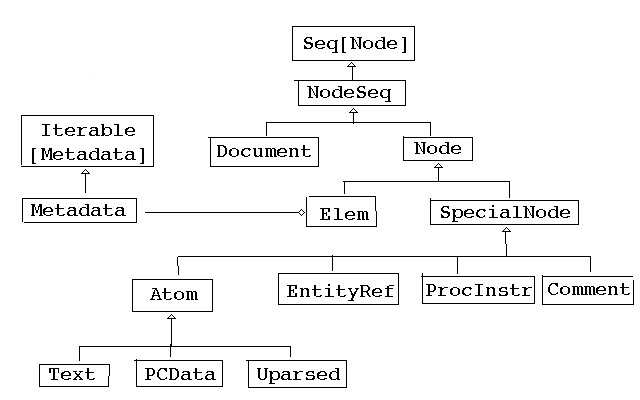

Java的注解只是往字节码里增加信息，但Scala的注解可能会影响编译过程。比如
@BeanProperty注解会增加getter与setter方法。
注解放在构造器之前，并加上括号（如果注解没有参数的话）：
class Credentials @Inject() (var username: String, var password: String)
对实际类型的注解放在类型名称后面。如为String类型添加了注解：
String @cps[Unit]
加在类型参数前：
class MyContainer[@specialized T]
还有应用在表达式上的注解，如@unchecked。格式是在表达式后加分号:再加注解：
(e: @unchecked) match {
// non-exhaustive cases...
}
前面讲的注解形式简单。比较完整的注解格式是：
@annot(exp1, exp2, ...) {val name1=const1, val name2 = cost1, ...}
小括号里与花括号里的都是注解的参数列表。
小括号里的是简单的常量或字面量或是任何简便类型的表达式。如引用作用域内的其他 引用：
@cool val normal = "Hello" @coolerThan(normal) val fonzy = "Heeyyy"
花括号内的是更加复杂、具有可选参数的注解。这些参数可选并且对顺序没有要求（因为是 K-V对应）。但是为了方便处理，等号右边的值必须是常量。
如果参数的名称为value，则可以省略名称：
@Named("creds") val credentials: Credentials = _
如果没有参数，括号也可以省略。
Java注解的参数类型只能是：
Scala的注解参数可以是任何类型。
下面介绍Scala里现有的标准注解。
@deprecated表示已经被弃用，一希望再被使用的东西：
@deprecated def bigMistake() = //...
这个注解可以被用在任何声明或定义上，如：val、var、def、class、object、
trait、type上。并用于跟随其后的声明或定义整体：
@deprecated class QuickAndDirty {
//...
}
两个参数message和since给出提示信息与废弃的版本：
@deprecated(message = "Use factorial(n: BigInt) instead") def factorial(n: Int): Int = //...
@deprecatedName可以被应用到参数上，并给出一个参数之前用过的名字：
def draw(@deprecatedName('sz) size: Int, sytle: Int = NORMAL)
注意这里的'sz是一个符号。用户还是可能通过draw(sz = 12)来调用，但是会得到一个
过期警告。
@BeanProperty
Scala里不用显式写getter和setter方法，但有些框架上还是要的。为此，Scala已经提供
了@scala.reflect.BeanProperty注解可以给字段自动加上getter和setter方法。如，对
字段age自动生成getAge和setAge。
注意这里生成的getter和setter方法是在编译之后才产生的。不过问题应该不大，毕竟 Scala里用不着这些getter和setter方法，是为了某些框架而需要的。显然我们不会在 同一时间又编译框架又编译调用框架的代码。
@BooleanBeanProperty产带有is前缀的getter方法，用于Boolean类型。
还有一些不常用的如：@BeanDescription、@BeanDisplayName、@Beaninfo和
@BeanInfoSkip自己RTFM。
警告用户最好不要用某些东西：
@deprecated def bigMistake() = //...
@strictfp对就Java中的strictfp修饰符。表示采用IEEE的双精度值进行浮点运算，而
不是使用Intel处理器默认的80位扩展精度。
@strictfp def calculate(x: Double) = doSth()
@native注解对应Java的native修饰符。表示本地调用C或C++的实现的代码：
@native def win32RegKeys(root: Int, path: String): Array[String]
@remote注解对应Java的java.rmi.Remote接口。
@cloneable注解对应Java的Cloneable接口。
@cloneable class Employee
@volatile警告会被多个线程使用，内容会被其他线程改变。
Scala没有序列化框架，但准备了三个注解：
@serializable表示可序列化（已经过时，应扩展scala.Serializable物质）。
@SerialVersionUID(version)标明序列化的版本号。version是数字版本号。
@transient标明类里的某个字段不应该被序列化。
@SerialVersionUID(6157032470129384659L) class Employee extends Person with Serializable
@unchecked标明在模式匹配时不用关心被漏掉的可能性。
@uncheckedVariance忽略与型变相关的错误提示。例如：java.util.Comparator应该是
逆变的。Student是Person的子类，所以在Comparator[Person]可以用来替代
Comparator[Student]。但Java的泛型不支持型变，所以需要声明忽略：
trait COmparator[-T] extends java.lang.Comparator[T @uncheckedVariance]
@varargs注解让Java调用Scala带有变长参数的方法。默认情况下变长参数被翻译为序列
：
def process(args: String*) // 等于： def process(args: Seq[String])
为了方便Java调用：
@varargs def process(args: String*)
产对应的Java方法作为中转：
void process(String ... args)
该方法把args数组外包装在Seq中，然后调用实际上的Scala方法。
@tailrec提示编译器进行尾递归优化，如果优化不了会报错：
@tailrec def sum(num: Int) = ....
C++与Java中switch语句可编译成跳转表以取得比if-else表达式更好的性能。@switch
注解让Scala尝试对match语句生成跳转表：
(n: @switch) match {
case 0 => "Zero"
case 1 => "One"
case _ => "?"
}
内联把方法调用转为外部方法的方法体内容。Scala中通过@inline来建议内联或用
@noinlie禁止内联。
通常内联发生在JVM内部，即时编译器自动进行的内联优化的效果已经非常好了。
@elidable注解标记可以在生产环境中移除的方法：
@elidable(500)
def dump(props: Map[String, String]) { doSth() }
编译时加上参数-Xelide-below：
scalac -Xelide-below 800 myprog.scala
elidable对象定义了一些常量值：
MAXIMUM或OFF = Int.MaxValue
ASSERTION = 2000
SEVERE = 1000
WARNING = 900
INFO = 800
CONFIG = 700
FINE = 500
FINER = 400
FINEST = 300
MINIMUM或ALL = Int.MinValue
注意这里有ALL、OFF有不同的场景：
这些常量可以在注解中使用：
import scala.annotation.elidable._
@elidable(FINE)
def dump(props: Map[String, String]) { doSth() }
编译时加上参数中也可以这样用：
scalac -Xelide-below INFO myprog.scala
如果没有指定-Xelide-below参数，默认低于1000（也就是低于SEVERE）的方法和断言会
被去除。
Predef模块定义了一个可以被忽略的assert方法。例如我们可以这样写：
def makeMap(keys: Seq[String], values: Seq[String]) = {
assert(keys.length == values.length, "lengths don't match")
// ...
}
默认情况下断言是启用的，-Xelide-below设值2001或MAXIMUM会禁用断言。
基本类型的打包和解包操作并不是很高效，但在涉及到泛型操作时又常常会用到。比如：
def fun[T](x: T, y:T) = ...
@specialized注解让编译器添加自动重载的基本类型版本：
def fun[@specialized T](x: T, y:T) = ...
还可以限定类型：
def fun[@specialized(Long, Double) T](x: T, y:T) = ...
可以指定的类型有：Unit、Boolean、Byte、Short、Char、Int、Lang、
Float、Double。
@implicitNotFound注解在找不到时给出更有意义的提示信息。
必须扩展Annotation特质，如unchecked注解：
class unchecked extends annotationAnnotation
注解可以选择扩展自下面两个特质：
StaticAnnotation：添加Scala元数据到类文件中。
ClassfileAnnotation：添加Java元数据到类文件中。（Scala2.9中还没有支持）
一般来说注解的作用范围是所在的位置，但有些元数据注解会扩展范围。如：
@param
@field
@getter、@setter
@beanGetter、@beanSetter
比较常见的应用场景是，把注解的目标从字段转为字段的getter、setter方法。例如，
deprecated注解的定义：
@getter @setter @beanGetter @beanSetter class deprecated(message: String = "", since: String = "") extends annotation.StaticAnnotation
除了在定义注解时加入元数据注解，在类中也可以加上元数据注解：
@Entity class Credentials {
@(Id @beanGetter)
@(BeanProperty)
var id = 0
因为JPA要求@Id注解要应用的Java的getId()方法，所以这里用@beanGetter注解把
标签的作用扩展到getId()方法上而不是id属性。
scala.xml包中有很多xml处理工具，比如单例对象XML。
就是像XML这样虽然不是二进制但还是有结构的文本之类的数据结构的特点之类的。
介绍什么是XML……还是略了吧……
Scala里可以直接给XML写字面量。解释器把从根标签的开始到结束都作为XML字面量：
scala> <a>
| This is some XML.
| Here is a tag: <atag/>
| </a>
res0: scala.xml.Elem =
<a>
This is some XML.
Here is a tag: <atag></atag>
</a>
上面的xml类型Elem类，其他一些与XML相关的重要类有：
Node类，所有XML节点的抽象。
Text类，只有文本的节点。
NodeSeq类，就是多个节点的序列。你可以把Node想象成只有一个成员的NodeSeq。
还有一个scala.xml.Null是一个空属性列表，不是scala.Null类型。
还有其他的类型：

Elem类表示XML元素：
val elem = <a href="http://scala-lang.org">The <em>Scala</em> language</a>
这里得到一个label属性为a的元素，它的child是子节点（两个Text和一个ELem
）
遍历子节点只要：
for (n <- elem.chile) doSth()
对于其他的内容如：注释（<!-- ... -->）、实体引用（&...;）、处理指令（
<?...?>）也有对应的类型。
NodeBuffer扩展自ArrayBuffer[Node]，可以用来构建节点序列。
scala> import scala.xml._ import scala.xml._ scala> val items = new NodeBuffer items: scala.xml.NodeBuffer = ArrayBuffer() scala> items += <li>Fred</li> res0: items.type = ArrayBuffer(<li>Fred</li>) scala> items += <li>Willma</li> res1: items.type = ArrayBuffer(<li>Fred</li>, <li>Willma</li>)
NodeBuffer是一个Seq[Node]可以被隐式转换为NodeSeq。注意转换以了就就别再改了
。XML节点序列应该是不可变的：
scala> val nodes: NodeSeq = items nodes: scala.xml.NodeSeq = NodeSeq(<li>Fred</li>, <li>Willma</li>)
attributes属性取得某个元素属性的键和值，类型为MetaData。可能通过()操作
来访问键的值：
scala> val elem = <a href="http://scala-lang.org/"> The Scala Language</a>
elem: scala.xml.Elem = <a href="http://scala-lang.org/"> The Scala Language</a>
scala> val url = elem.attributes("href")
url: Seq[scala.xml.Node] = http://scala-lang.org/
注意得到的结果类型是Seq[Node]，如果内容中有特殊字符的话：
scala> val image = <img alt="San josé state university logo" src="ali.jpg" />
image: scala.xml.Elem = <img alt="San josé state university logo" src="ali.jpg"/>
scala> val alt = image.attributes("alt")
alt: Seq[scala.xml.Node] = San josé state university logo
可以转义特殊字符：
scala> val image = <img alt="San josé state university logo" src="ali.jpg" />
image: scala.xml.Elem = <img alt="San josé state university logo" src="ali.jpg"/>
scala> val alt = image.attributes("alt")
alt: Seq[scala.xml.Node] = San josé state university logo
如果属性中不存在未被解析的实体，可以用test方法转成字符串：
scala> val alt = image.attributes("alt").text
alt: String = San josé state university logo
如果属性不存在，()操作返回null；用get方法可以返回Option[Seq[Node]]。
MetaData类没有getOrElse方法，但可以用get方法对Option类结果应用
getOrElse：
scala> val url = image.attributes.get("href").getOrElse(Text(""))
url: Seq[scala.xml.Node] =
遍历所有属性：
for (attr <- elem.attributes) doSth()
也可以用asAttrmap方法：
scala> val image = <img alt="TODO" src="hamster.jpg"/> image: scala.xml.Elem = <img alt="TODO" src="hamster.jpg"/> scala> val map = image.attributes.asAttrMap map: Map[String,String] = Map(alt -> TODO, src -> hamster.jpg)
不仅有字面量，而且还可以用{}来引入Scala代码，如：
scala> <a> {"hello"+", world"} </a>
res1: scala.xml.Elem = <a> hello, world </a>
如果不是要表达式，而就是字面上的花括号，，那连续两个{{}}就可以转义了。
scala> val ms = <p>{{hello}}</p>
ms: scala.xml.Elem = <p>{hello}</p>
表达式可以多层嵌套，在Scala代码与XML字面量中重复切换：
scala> val yearMade = 1955 yearMade: Int = 1955
scala> <a> { if (yearMade < 2000) <old>{yearMade}</old>
| else xml.NodeSeq.Empty }
| </a>
res2: scala.xml.Elem =
<a> <old>1955</old>
</a>
上面有程序if条件来判断有内容还是没有内容。注意没有内容以XML节点表示就是
xml.NodeSeq.Empty。
花括号里表达式不一定要输出XML节点，其他的类型Scala值都会被传为字符串：
scala> <a> {3 + 4} </a>
res3: scala.xml.Elem = <a> 7 </a>
如果输出返回节点，则文本中的<、>和&会被转义：
scala> <a> {"</a>potential security hole<a>"} </a>
res4: scala.xml.Elem = <a> </a>potential security
hole<a> </a>
相反，如果用底层的字符串操作创建XML，可以会因为漏掉转义而出错：
scala> "<a>" + "</a>potential security hole<a>" + "</a>" res5: java.lang.String = <a></a>potential security hole<a></a>
所以还是用XML字面量比较安全。
如果要转义花括号的话，只要在一行里写两次花括号就可以了：
scala> <a> {{{{brace yourself!}}}} </a>
res7: scala.xml.Elem = <a> {{brace yourself!}} </a>
如果表达式产的结果是节点序列会直接添加到XML中，其他类型的结果放到一个Atom[T]
容器中。这样就可以在XML树中放置任何类型的值，并可用Atom节点的data属性取得
这些值。XML保存时这些Atom类型实例会调用data的toString方法转成字符串。
内嵌的字符串不会转成Text节点而是作为Atom[String]节点。保存成文本时没有问题，
但是如果要用Text节点的模式进行模式匹配就匹配不了，因为Text是Atom[String]
的子类。这种情况下应该加入的是Text节点面不是字符串：
<li>{Text("Another item")}</li>
函数返回的字符串直接作为属性值：
<img src={makeURL(fileName)} />
注意不能加引号，不然就原文输出了。如下面这样：
<img src="{makeURL(fileName)}" />
如果要在属性中包含实体引用或是原子，可以在表达式中产出一个节点序列：
<a id={new Atom(1)} ... />
在表达式返回null或None的情况下，属性会不被设置：
<img alt={if (description == "TODO") null else description} ... />
用Option[Seq[Node]]也有同样的效果：
<img alt={if (description == "TODO") None else Some(Text(description))} ... />
非XML文本，如XHTML中的JavaScript代码，用CDATA：
scala> val js = <script><![CDATA[if (temp < 0) alert("Cold!")]]></script>
js: scala.xml.Elem = <script>if (temp < 0) alert("Cold!")</script>
但对解析器来说这只是一个Text子节点，不知道它是CDATA。可以用一个PCData节点
类型：
scala> val code = """if (temp < 0) alert("Cold!")"""
code: String = if (temp < 0) alert("Cold!")
scala> val js = <script>{PCData(code)}</script>
js: scala.xml.Elem = <script><![CDATA[if (temp < 0) alert("Cold!")]]></script>
还可以用Unparsed节点包含任意文本，但这样人工输入的XML很容易格式错误，不推荐：
scala> val n1 = <xml:unparsed><&></xml:unparsed>
n1: scala.xml.Unparsed = <&>
scala> val n2 = Unparsed("<&>")
n2: scala.xml.Unparsed = <&>
还可以对节点进行分组：
scala> val g1 = <xml:group><li>Item 1</li><li>Item 2</li></xml:group> g1: scala.xml.Group = <li>Item 1</li><li>Item 2</li> scala> val g2 = Group(Seq(<li>Item 1</li>, <li>Item 2</li>)) g2: scala.xml.Group = <li>Item 1</li><li>Item 2</li>
注意Seq()方法中一定要用逗号与空格分开，不能少。
组里的元素被作为两个元素：
scala> for (n <- <xml:group><li>Item 1</li><li>Item 2</li></xml:group>) yield n res2: scala.xml.NodeSeq = NodeSeq(<li>Item 1</li>, <li>Item 2</li>)
其他情况下：
scala> for (n <- <li>Item 1</li><li>Item 2</li>) yield n res0: scala.collection.mutable.ArrayBuffer[scala.xml.Node] = ArrayBuffer(<li>Item 1</li>, <li>Item 2</li>) scala> for (n <- <ol><li>Item 1</li><li>Item 2</li></ol>) yield n res1: scala.xml.NodeSeq = NodeSeq(<ol><li>Item 1</li><li>Item 2</li></ol>) // 只有一个ol元素
Scala中可以直接用基于XPath语言的工具处理XML。
取得去掉了标签以后的文本：
scala> <a>Sounds <tag/> good</a>.text res8: String = Sounds good
所有的编码字符会自动解码：
scala> <a> input ---> output </a>.text res9: String = input ---> output
用类似XPath的\()方法查找得第一层子节点：
scala> <a><b><c>hello</c></b></a> \ "b" res10: scala.xml.NodeSeq = <b><c>hello</c></b>
用\\()方法代替\()方法搜索任意深度的子节点：
scala> <a><b><c>hello</c></b></a> \ "c" res11: scala.xml.NodeSeq = scala> <a><b><c>hello</c></b></a> \\ "c" res12: scala.xml.NodeSeq = <c>hello</c> scala> <a><b><c>hello</c></b></a> \ "a" res13: scala.xml.NodeSeq = scala> <a><b><c>hello</c></b></a> \\ "a" res14: scala.xml.NodeSeq = <a><b><c>hello</c></b></a>
Scala用\和\\代替了XPath里的/和//。原因是//会和Scala的注释混淆。
也是用\和\\，不过要加上@：
scala> val joe = <employee
| name="Joe"
| rank="code monkey"
| serial="123"/>
joe: scala.xml.Elem = <employee rank="code monkey" name="Joe"
serial="123"></employee>
scala> joe \ "@name"
res15: scala.xml.NodeSeq = Joe
scala> joe \ "@serial"
res16: scala.xml.NodeSeq = 123
属性不能用通配符，如：
img \ "@_"
是什么也查不到的。
与XPath不同，\()方法不能从多个节点里取得属性，下面这样：
doc \\ "img" \ "@src"
如果遇到有多个img元素的不行的，要用：
doc \\ "img" \\ "@src"
\()与\\()方法得到的结果是序列类型的。所以除非确信只有一个匹配的结果，否则
应该用遍历的方式来处理返回的结果：
for (n <- doc \\ "img") doSth()
如果对结果调用text会把文本串成一起
scala> (<img src="aa.jpg"/><img src="bb.jpg"/> \\ "@src").text res3: String = aa.jpgbb.jpg
从Scala内部结构到XML转换的例子。
以一个收集古董可口可乐温度计的数据库为例子。下面的内部类以目录形式保存条目。记录 了生产时间，购入时间，购买费用：
abstract class CCTherm {
val description: String
val yearMade: Int
val dateObtained: String
val bookPrice: Int // in US cents
val purchasePrice: Int // in US cents
val condition: Int // 1 to 10
override def toString = description
}
只要添加了toXML方法就可以把实例转为XML：
abstract class CCTherm {
...
def toXML =
<cctherm>
<description>{description}</description>
<yearMade>{yearMade}</yearMade>
<dateObtained>{dateObtained}</dateObtained>
<bookPrice>{bookPrice}</bookPrice>
<purchasePrice>{purchasePrice}</purchasePrice>
<condition>{condition}</condition>
</cctherm>
}
实际操作中的执行效果如下：
val therm = new CCTherm {
val description = "hot dog #5"
val yearMade = 1952
val dateObtained = "March 14, 2006"
val bookPrice = 2199
val purchasePrice = 500
val condition = 9
}
scala> val therm = new CCTherm {
| val description = "hot dog #5"
| val yearMade = 1952
| val dateObtained = "March 14, 2006"
| val bookPrice = 2199
| val purchasePrice = 500
| val condition = 9
| }
therm: CCTherm = hot dog #5
scala> therm.toXML
res6: scala.xml.Elem =
<cctherm>
<description>hot dog #5</description>
<yearMade>1952</yearMade>
<dateObtained>March 14, 2006</dateObtained>
<bookPrice>2199</bookPrice>
<purchasePrice>500</purchasePrice>
<condition>9</condition>
</cctherm>
注意，虽然CCTherm是抽象类，但是new CCTherm还是可以正常工作，因为这样的语法
实际上是实例化了CCTherm的匿名子类。
把XML解析回对象：
def fromXML(node: scala.xml.Node): CCTherm =
new CCTherm {
val description = (node \ "description").text
val yearMade = (node \ "yearMade").text.toInt
val dateObtained = (node \ "dateObtained").text
val bookPrice = (node \ "bookPrice").text.toInt
val purchasePrice = (node \ "purchasePrice").text.toInt
val condition = (node \ "condition").text.toInt
}
使用时的效果：
scala> val node = therm.toXML
node: scala.xml.Elem =
<cctherm>
<description>hot dog #5</description>
<yearMade>1952</yearMade>
<dateObtained>March 14, 2006</dateObtained>
<bookPrice>2199</bookPrice>
<purchasePrice>500</purchasePrice>
<condition>9</condition>
</cctherm>
scala> fromXML(node)
res15: CCTherm = hot dog #5
把XML转为字符串只要调用toString方法。
如果要把XML转换为字节文件可以使用XML.saveFull命令。参数：
scala.xml.dtd.DocType（null表示任意类型这里不深入讨论）。
例子：
scala.xml.XML.saveFull("therm1.xml", node, "UTF-8", true, null)
therml.xml的内容：
<?xml version='1.0' encoding='UTF-8'?>
<cctherm>
<description>hot dog #5</description>
<yearMade>1952</yearMade>
<dateObtained>March 14, 2006</dateObtained>
<bookPrice>2199</bookPrice>
<purchasePrice>500</purchasePrice>
<condition>9</condition>
</cctherm>
如果要保存一个XHTML，典型的例子是：
scala.xml.XML.saveFull("therm1.xml", node, "UTF-8", true,
DocType("html", PublicID( "-//W3C//DTD XHTML 1.0 Strict//EN",
"http://www.w3.org/TR/xhtml1/DTD/xhtml11-strict.dtd"), Nil)
)
把空节点写为自结束标签：
scala> val image = <img src="logo.jpg"></img> image: scala.xml.Elem = <img src="logo.jpg"></img> scala> val str = xml.Utility.toXML(image, minimizeTags = true) warning: there were 1 deprecation warning(s); re-run with -deprecation for details str: StringBuilder = <img src="logo.jpg"/>
PrettyPrinter类可提供更加美观的格式：
scala> val printer = new PrettyPrinter(width = 100, step = 4) printer: scala.xml.PrettyPrinter = scala.xml.PrettyPrinter@73aa0439 scala> val str = printer.formatNodes(image) str: String = <img src="logo.jpg"></img>
读取文件比保存简单，只要调用xml.XML对象的loadFile方法并传入文件名：
scala> val loadnode = xml.XML.loadFile("therm1.xml")
loadnode: scala.xml.Elem =
<cctherm>
<description>hot dog #5</description>
<yearMade>1952</yearMade>
<dateObtained>March 14, 2006</dateObtained>
<bookPrice>2199</bookPrice>
<purchasePrice>500</purchasePrice>
<condition>9</condition>
</cctherm>
scala> fromXML(loadnode)
res14: CCTherm = hot dog #5
也可以从java.io.InputStream、java.io.Reader或URL加载：
val root2 = XML.load(new FileInputStream("myfile.xml"))
val root3 = XML.load(new InputStreamReader(
new FileInputStream("myfile.xml"),"UTF-8"))
val root4 = XML.load(new URL("http;//horstmann.com/index.html"))
默认的加载工具是Java的SAX解析器，它不会从本地编目而是从w3c.org读取DTD。尤其是 处理XHTML时会这种行为花非常长的时间。
JDK的com.sun.org.apache.xml.internal.resolver.tools包中的CatelogResolver类或
Apache Commons Resolver提供的版本：
http://xml.apache.org/commons/components/resolver/resolver-article.html
XML对象没有接口可以用来安装实体解析器，只能通过后门来达到目的：
val res = new CatalogResolver
val doc = new factory.XMLLoader[Elem] {
override def adapter = new parsing.NoBindingFactoryAdapter() {
override def resolveEntity(publicId: String, systemId: String) = {
res.resolveEntry(publicId, systemId)
}
}
}.load(new URL("http://horstmann.com/index.html"))
和Java或Scala中的包一样，XML通过xmlns属性指定命名空间，其形式类似URI：
<html xmlns="http://www.w3.org/1999/xhtml"> <head></head> <body></body> </html>
html元素和所有的子元素（head、body等）都是在命令空间中的。子元素也可以导入
自己的命名空间：
<svg xmlns="http://www.w3.org/2000/svg" width="100" height="100"> <rect x="25" y="25" width="50" height="50" fill="#ff000000" /> </svg>
混用多个命名空间时，可以用“命令空间前缀”来给长长的命名空间起别名：
<html xmlns="http://www.w3.org/1999/xhtml" xmlns:svg="http://www.w3.org/2000/svg" >
用svg来代替http://www.w3.org/2000/svg，所有svg:开关的都代表该命名空间：
<svg:svg width="100" height="100"> <svg:rect x="25" y="25" width="50" height="50" fill="#ff000000" /> </svg:svg>
每个Elem对象都有prefix和scope值，解析器会自动设置这些值。然后可以用
scope.uri得到命名空间。代码创建里的XML元素要手动设置prefix和scope：
scala> val scope = new NamespaceBinding("svg", "http://www.w3.org/2000/svg",
| TopScope)
scope: scala.xml.NamespaceBinding = xmlns:svg="http://www.w3.org/2000/svg"
scala> val attrs = Attribute(null, "width", "100", Attribute(
| null, "height", "100", Null))
attrs: scala.xml.Attribute = width="100" height="100"
scala> val elem = Elem(null, "body", Null, TopScope, Elem(
| "svg", "svg", attrs, scope))
warning: there were 2 deprecation warning(s); re-run with -deprecation for details
elem: scala.xml.Elem = <body><svg:svg width="100" height="100"
xmlns:svg="http://www.w3.org/2000/svg"/></body>
XML的模式很像字面量，差别在于如果加入转义花括号，那么花括号里的不是表达式而是
模式。{}里的模式可以使用所有的Scala模式语言，包括绑定新变量、执行类型检查、
使用_和_*忽略内容。例如：
def proc(node: scala.xml.Node): String =
node match {
case <a>{contents}</a> => "It's an a: "+ contents
case <b>{contents}</b> => "It's a b: "+ contents
case _ => "It's something else."
}
上面的代码前两个把a和b标签的内容放到变量contents里。最后一个匹配以外的所有
情况。调用的效果如下：
scala> proc(<a>apple</a>) res16: String = It's an a: apple scala> proc(<b>banana</b>) res17: String = It's a b: banana scala> proc(<c>cherry</c>) res18: String = It's something else.
如果是嵌套的标签：
scala> proc(<a>a <em>red</em> apple</a>) res19: String = It's something else. scala> proc(<a/>) res20: String = It's something else.
这样的情况要执行对节点序列而不是单个节点的匹配。“任意序列”XML节点的模式写为_*
，看起来这个像是通配模式_后加上正则表达式风格的克莱尼星号（Kleene star）。
更新后的函数用子元素序列的匹配取代了对单个子元素的匹配：
def proc(node: scala.xml.Node): String =
node match {
case <a>{contents @ _*}</a> => "It's an a: "+ contents
case <b>{contents @ _*}</b> => "It's a b: "+ contents
case _ => "It's something else."
}
注意_*的结果是通过使用@模式绑定到了contents变量。执行效果如下：
scala> proc(<a>a <em>red</em> apple</a>)
res21: String = It's an a: ArrayBuffer(a ,
<em>red</em>, apple)
scala> proc(<a/>)
res22: String = It's an a: Array()
case语句中只能处理一个结点，下面的形式是不可以的：
case <p>{_*}</p><br /> => ...
匹配可能属性，但不能有子节点的标签：
node match {
case <img/> => ...
...
}
匹配只有一个子节点：
case <li>{_}</li> => doSth() // 非法
匹配有多个子节点，如：
<li>An <em>important</em> item</li>
可用：
case <li>{_*}</li> => doSth()
用变量取得匹配的内容：
case <li>{child}</li> => child.text
匹配一个文本节点：
case <li>{Text(item)}</li> => item
绑定节点序列到变量：
case <li>{children @ _*}</li> => for (c <- children) yield c
XML模式匹配不能有属性：
case <img alt="TODO"/> => doSth() // 非法
匹配属性要结合守卫模式：
case n @ <img/> if (n.attributes("alt").text == "TODO") => doSth()
要注意XML模式能很好地与for表达式一起工作，迭代XML结构树的某些部分而忽略其他部分 。例如希望在下面的XML结构中路过记录之间的空白：
val catalog =
<catalog>
<cctherm>
<description>hot dog #5</description>
<yearMade>1952</yearMade>
<dateObtained>March 14, 2006</dateObtained>
<bookPrice>2199</bookPrice>
<purchasePrice>500</purchasePrice>
<condition>9</condition>
</cctherm>
<cctherm>
<description>Sprite Boy</description>
<yearMade>1964</yearMade>
<dateObtained>April 28, 2003</dateObtained>
<bookPrice>1695</bookPrice>
<purchasePrice>595</purchasePrice>
<condition>5</condition>
</cctherm>
</catalog>
看起来好像catalog元素有两个节点，实际上所有的空白字符也是作为节点的。所以还有
前面的、后面的、以及两个元素之间的空白，实际上有五个！如果没有注意到这些空白，
或许会错误地像下面这样处理温度计的记录：
catalog match {
case <catalog>{therms @ _*}</catalog> =>
for (therm <- therms)
println("processing: "+
(therm \ "description").text)
}
processing:
processing: hot dog #5
processing:
processing: Sprite Boy
processing:
可以发现所有的代码行都在尝试把空白当作记录处理，而实际上应该只处理在cctherm
元素之间的子节点。模式<ccterm>{_*}</ccterm>可以描述这个子集，并限制for表达式
枚举能够匹配这个模式的条目：
catalog match {
case <catalog>{therms @ _*}</catalog> =>
for (therm @ <cctherm>{_*}</cctherm> <- therms)
println("processing: "+
(therm \ "description").text)
}
processing: hot dog #5
processing: Sprite Boy
还有一个统计真实元素个数的方法：
(catalog \\ "cctherm").size
Scala中XML节点和节点序列都是不可变的，要copy方法编辑复本。copy方法有五个参数
：
不传值给参数会把原来的元素复制过来，也可以通过传名参数指定参数的值：
scala> val list = <ul><li>Fred</li><li>Wilma</li></ul> list: scala.xml.Elem = <ul><li>Fred</li><li>Wilma</li></ul> scala> val list2 = list.copy() list2: scala.xml.Elem = <ul><li>Fred</li><li>Wilma</li></ul> scala> val list2 = list.copy(label = "ol") list2: scala.xml.Elem = <ol><li>Fred</li><li>Wilma</li></ol>
添加子节点：
scala> list.copy(child = list.child ++ <li>Another item</li>) res0: scala.xml.Elem = <ul><li>Fred</li><li>Wilma</li><li>Another item</li></ul>
修改或添加属性用操作符%添加Attribute实例。Attribute的构造方法格式为：
Attribute(命名空间, 属性, 值, 额外的元数据列表)
scala> import scala.xml._ import scala.xml._ scala> val image = <img src="hamster.jpg"/> image: scala.xml.Elem = <img src="hamster.jpg"/> scala> val image2 = image % Attribute(null, "alt", "An image of a hamster", Null) image2: scala.xml.Elem = <img alt="An image of a hamster" src="hamster.jpg"/>
注意：scala.xml.Null是一个空属性列表，不是scala.Null类型
添加多个属性，放在最后一个参数里：
scala> val image3 = image % Attribute(null, "alt", "An image of a hamster",
| Attribute(null, "alt", "An image of a hamster", Null))
image3: scala.xml.Elem = <img alt="An image of a hamster" src="hamster.jpg"/>
同一个属性只能有一个值，新的值会覆盖前一个值。
RuleTransformer类批量重写符合指定条件的后代。把一个或多个RewriteRule实例应用
到某个节点及其子节点。
例如，把ul节点修改为ol，可以定义一个RewriteRule并重写transform方法：
scala> import scala.xml.transform._
import scala.xml.transform._
scala> val rule1 = new RewriteRule {
| override def transform(n: Node) = n match {
| case e @ <ul>{_*}</ul> => e.asInstanceOf[Elem].copy(label = "ol")
| case _ => n
| }
| }
rule1: scala.xml.transform.RewriteRule = <function1>
应用：
scala> val root = <ul><li>item 1</li></ul> root: scala.xml.Elem = <ul><li>item 1</li></ul> scala> val transformed = new RuleTransformer(rule1).transform(root) transformed: Seq[scala.xml.Node] = List(<ol><li>item 1</li></ol>)
RuleTransformer的构造器中可以传入多个规则作为参数：
new RuleTransformer(rule1, rule2, rule3)
以高内聚低耦合为目标构建大型应用。
构建一个web项目，不仅要把项目分层，而且变了方便测试，还要对要测试的相关层进行 模仿。
先进行建模工作。
食品类只有一个名字：
package org.stairwaybook.recipe
abstract class Food(val name: String) {
override def toString = name
}
食谱只有名称、材料列表、做法：
package org.stairwaybook.recipe
class Recipe(
val name: String,
val ingredients: List[Food],
val instructions: String
) {
override def toString = name
}
食品和食谱都是要被持久化到数据库里的。下面再建立了这两个类的一些单例对象用来 测试：
package org.stairwaybook.recipe
object Apple extends Food("Apple")
object Orange extends Food("Orange")
object Cream extends Food("Cream")
object Sugar extends Food("Sugar")
object FruitSalad extends Recipe(
"fruit salad",
List(Apple, Orange, Cream, Sugar),
"Stir it all together."
)
现在来模拟数据库和浏览功能。因为只是模拟，没有真的数据库，用列表来代替：
package org.stairwaybook.recipe
object SimpleDatabase {
def allFoods = List(Apple, Orange, Cream, Sugar)
def foodNamed(name: String): Option[Food] =
allFoods.find(_.name == name)
def allRecipes: List[Recipe] = List(FruitSalad)
}
object SimpleBrowser {
def recipesUsing(food: Food) =
SimpleDatabase.allRecipes.filter(recipe =>
recipe.ingredients.contains(food))
}
测试调用：
scala> val apple = SimpleDatabase.foodNamed("Apple").get
apple: Food = Apple
scala> SimpleBrowser.recipesUsing(apple)
res0: List[Recipe] = List(fruit salad)
添加数据库对食品分类的功能。通过FoodCategory类表示食物类型，再用一个列表保存
所有的食物分类。注意关键字private不仅增加了访问限制，又可以保证对它的重构
不会影响其他的外部模块，因为外部模块本来就不能直接访问它。
单例对象可以方便地把程序分成多个模块，改进后的代码如下：
package org.stairwaybook.recipe
object SimpleDatabase {
def allFoods = List(Apple, Orange, Cream, Sugar)
def foodNamed(name: String): Option[Food] =
allFoods.find(_.name == name)
def allRecipes: List[Recipe] = List(FruitSalad)
case class FoodCategory(name: String, foods: List[Food])
private var categories = List(
FoodCategory("fruits", List(Apple, Orange)),
FoodCategory("misc", List(Cream, Sugar)))
def allCategories = categories
}
object SimpleBrowser {
def recipesUsing(food: Food) =
SimpleDatabase.allRecipes.filter(recipe =>
recipe.ingredients.contains(food))
def displayCategory(category: SimpleDatabase.FoodCategory) {
println(category)
}
}
现在的代码虽然已经分成了数据库模拟与浏览器模块，但这并不是真正模块化的。问题在于 浏览器模拟是“硬链接”到数据库模块上的：
SimpleDatabase.allRecipes.filter(recipe => ...
这样数据库模块的改动会影响到浏览模块。解决方案是：如果模块是对象，那模块的模板
就是类。把浏览器定义为类，所用的数据库指定为类的抽象成员。数据库类应具备的方法有
allFoods、allRecipes、allCategories。
abstract class Browser {
val database: Database
def recipesUsing(food: Food) =
database.allRecipes.filter(recipe =>
recipe.ingredients.contains(food))
def displayCategory(category: database.FoodCategory) {
println(category)
}
}
abstract class Database {
def allFoods: List[Food]
def allRecipes: List[Recipe]
def foodNamed(name: String) =
allFoods.find(f => f.name == name)
case class FoodCategory(name: String, foods: List[Food])
def allCategories: List[FoodCategory]
}
单例对象由对应的类继承而来：
object SimpleDatabase extends Database {
def allFoods = List(Apple, Orange, Cream, Sugar)
def allRecipes: List[Recipe] = List(FruitSalad)
private var categories = List(
FoodCategory("fruits", List(Apple, Orange)),
FoodCategory("misc", List(Cream, Sugar)))
def allCategories = categories
}
object SimpleBrowser extends Browser {
val database = SimpleDatabase
}
现在模块的具体实现是可以替换的：
scala> val apple = SimpleDatabase.foodNamed("Apple").get
apple: Food = Apple
scala> SimpleBrowser.recipesUsing(apple)
res1: List[Recipe] = List(fruit salad)
在需要的时候可以换一个模块的新实现：
object StudentDatabase extends Database {
object FrozenFood extends Food("FrozenFood")
object HeatItUp extends Recipe(
"heat it up",
List(FrozenFood),
"Microwave the 'food' for 10 minutes.")
def allFoods = List(FrozenFood)
def allRecipes = List(HeatItUp)
def allCategories = List(
FoodCategory("edible", List(FrozenFood)))
}
object StudentBrowser extends Browser {
val database = StudentDatabase
}
如果单个模块放在一个文件里太大的话，用特技拆成多个文件：
trait FoodCategories {
case class FoodCategory(name: String, foods: List[Food])
def allCategories: List[FoodCategory]
}
现在Database类可以混入FodCategories特质而无须定义FoodCategory和
allCategories：
abstract class Database extends FoodCategories {
def allFoods: List[Food]
def allRecipes: List[Recipe]
def foodNamed(name: String) =
allFoods.find(f => f.name == name)
}
再把SimpleDatabase分成食物和食谱两个特质：
object SimpleDatabase extends Database
with SimpleFoods with SimpleRecipes
食物特质：
trait SimpleFoods {
object Pear extends Food("Pear")
def allFoods = List(Apple, Pear)
def allCategories = Nil
}
但食谱物质遇到了问题：
trait SimpleRecipes { // Does not compile
object FruitSalad extends Recipe(
"fruit salad",
List(Apple, Pear), // Uh oh
"Mix it all together."
)
def allRecipes = List(FruitSalad)
}
不能编译的原因是Pear没有处于使用它的特质中。编译器不知道SimpleRecipes只会与
SimpleFoods混搭在一起。针对这种情况Scala提供了自身类型（self type）。表明在
类中提到到this时，对于this的类型假设。混入了多个特质时指定这些特质为假设性
特质。
在这个例子中只要指定SimpleFoods一个特质为假设性特质就够了，现在Pear在作用域
里了：
trait SimpleRecipes {
this: SimpleFoods =>
object FruitSalad extends Recipe(
"fruit salad",
List(Apple, Pear), // Now Pear is in scope
"Mix it all together."
)
def allRecipes = List(FruitSalad)
}
Pear的引用被认为是this.Pear。因为任何混入了SimpleRecipes的具体类都必须同时
是SimpleFoods的子类，所以说Pear会是它的成员，所以没有安全问题。而抽象子类
不用遵守这个限制，因为抽象子类不能new实例化，所以不存在this.Pear引用失败的
风险。
Scala又一个牛B的特性是可以在运行进链接，并根据运行时决定哪个模块将链接到哪个模块 。如，下面的代码可以在运行时选择数据库并打印输出所胡苹果食谱：
object GotApples {
def main(args: Array[String]) {
val db: Database =
if(args(0) == "student")
StudentDatabase
else
SimpleDatabase
object browser extends Browser {
val database = db
}
val apple = SimpleDatabase.foodNamed("Apple").get
for(recipe <- browser.recipesUsing(apple))
println(recipe)
}
}
如果先简单数据库，会看到水果色拉食谱；如果选小学生数据库，会找不到苹果食谱：
$ scala GotApples simple fruit salad $ scala GotApples student $
虽然这里和本章形状的硬链接版本一样写死了StudentDatabase和SimpleDatabase类名
，但区别是它们处于可替换的文件中。
这有点像Java中用Spring的XML配置注入。Scala里通过程序来配置还可以增加语法检查。
虽然代码一样但上一节中创建不同浏览器和数据库模块依然是分离的模块，所以每个模块
都有自己的内容，包括内嵌类。比如说SimpleDatabase里的FoodCategory就与
StudentBatabase里的FoodCategory不是同一个类：
scala> val category = StudentDatabase.allCategories.head
category: StudentDatabase.FoodCategory =
FoodCategory(edible,List(FrozenFood))
scala> SimpleBrowser.displayCategory(category)
<console>:12: error: type mismatch;
found : StudentDatabase.FoodCategory
required: SimpleBrowser.database.FoodCategory
SimpleBrowser.displayCategory(category)
^
把FoodCategory定义移到类或特质之外可以让所有的FoodCategory都相同。开发人员
可以选择是不是要这样做。就上面的例子来说两个FoodCategory类确实是不同的，
所以编译器会报错很正常。
但有时可能会遇到虽然两个类型相同但是编译器却不能识别的情况。这时可以用单例类型来
解决这个问题。例如在GotApples程序里，类型检查器不知道db和browser.database
是相同的。所以如果尝试在两个对象之间传递分类信息会引起类型错误：
object GotApples {
// same definitions...
for (category <- db.allCategories)
browser.displayCategory(category)
// ...
}
GotApples2.scala:14: error: type mismatch;
found : db.FoodCategory
required: browser.database.FoodCategory
browser.displayCategory(category)
^
one error found
要避免这个错误，需要通知类型检查器它们是同一个对象。可以通过改变
browser.database的定义实现：
object browser extends Browser {
val database: db.type = db
}
这个定义基本上和前面一样，就是database的类型很怪db.type。结尾.type表示它是
单例类型。这是一个特殊的类型，内容只保存一个对象，在这里就是db指向的那个对象。
因为这个东西一般没有什么用处所以编译器不默认引入它。但是在这里的单例类型可以让
编译器知道db和browser.database是同样的对象，这些信息可以消除类型错误。
Scala和Java不同，eq表示同一实体；==表示实体含义相同。
Scala中的==不能重写，因为在Any类中被定义为final的：
final def == (that: Any): Boolean =
if (null eq this) {null eq that} else {this equals that}
不过可以看到这里调用了equals方法，可以覆盖它来定义相等性方法。
要正确实现相等性方法比想象中的困难。而且因为相等性是很多其他操作的基础，如果出错
的话，像是把C类型的实例放到不可重复集这样的操作也会出错：
var hashSet: Set[C] = new collection.immutable.HashSet hashSet += elem1 hashSet contains elem2 // returns false!
重写equals方法是常常会出现的四种错误，在本节以后的部分会分别讨论：
Any。
equals忘记改了hashCode。
equals方法。
equals方法。
equals方法参数的类型一定要是是Any，不能是具体类。
对于以下的点类，考虑怎么实现equals方法：
class Point(val x: Int, val y: Int) { ... }
下面的实现看起来不错，其实是错的：
// An utterly wrong definition of equals
def equals(other: Point): Boolean =
this.x == other.x && this.y == other.y
粗看好像没有问题：
scala> val p1, p2 = new Point(1, 2) p1: Point = Point@62d74e p2: Point = Point@254de0 scala> val q = new Point(2, 3) q: Point = Point@349f8a scala> p1 equals p2 res0: Boolean = true scala> p1 equals q res1: Boolean = false
但是一但放到集体里，那就出问题了：
scala> import scala.collection.mutable._ import scala.collection.mutable._ scala> val coll = HashSet(p1) coll: scala.collection.mutable.Set[Point] = Set(Point@62d74e) scala> coll contains p2 res2: Boolean = false
p1等于p2，而且p1已经在coll里了，但是为什么程序判断coll里不包含p2呢？
为了调查我们遮住一个参与比较的点的精确类来，然后再做以下操作：
把p2a作为p2的别名，只不过类型是Any而不是Point，再用p2a而不是p2来比较
：
scala> val p2a: Any = p2 p2a: Any = Point@254de0 scala> p1 equals p2a res3: Boolean = false
问题在于equals方法没有重写标准equals方法，因为它的类型不同。根类Any中定义
的类型是：
def equals(other: Any): Boolean
所以说有Point没有覆盖Any里的相等方法，只是重载了。现在有了两个equals方法。
参数如果是Any的话调用的是参数是Any版本的方法。而HashSet的contains方法是
泛型集合，所以它只调用Object类的equals方法而不是Point是重载的版本。更好的
版本如下：
// A better definition, but still not perfect
override def equals(other: Any) = other match {
case that: Point => this.x == that.x && this.y == that.y
case _ => false
}
还有一个陷阱是方法名错误。通常如果用正确的签名（即参数是Any类型）来重新定义
==方法编译器会报错，因为Any是final方法，就像是这样：
def ==(other: Point): Boolean = // Don't do this!
虽然上面这里把参数类型改了，通过了编译。但这里还只是重载而不是覆盖。
asdfa
有些集合判断时还要看hashCode方法。对于下面的例子来说，有一定机率下还是会得到
false。说“一定机率是因为”哈希码还是有一定机率会碰撞的：
scala> val p1, p2 = new Point(1, 2) p1: Point = Point@670f2b p2: Point = Point@14f7c0 scala> HashSet(p1) contains p2 res4: Boolean = false
要记住按规范来说如果两个实例是相等的话，那么二者的哈希码也一定要一样。这里合适的
hashCode定义如下：
class Point(val x: Int, val y: Int) {
override def hashCode = 41 * (41 + x) + y
override def equals(other: Any) = other match {
case that: Point => this.x == that.x && this.y == that.y
case _ => false
}
}
注意这里使用了常量41是一个质数。
如果坐标的x与y是可变的var：
class Point(var x: Int, var y: Int) { // Problematic
override def hashCode = 41 * (41 + x) + y
override def equals(other: Any) = other match {
case that: Point => this.x == that.x && this.y == that.y
case _ => false
}
}
放到了集合里又改变的话会引起麻烦：
scala> val p = new Point(1, 2) p: Point = Point@2b scala> val coll = HashSet(p) coll: scala.collection.mutable.Set[Point] = Set(Point@2b) scala> coll contains p res5: Boolean = true
改变以后：
scala> p.x += 1 scala> coll contains p res7: Boolean = false
如果是用集合成员elements.contains(..)看到的结果会更加奇怪：
scala> coll.elements contains p res8: Boolean = true
推荐的做法是不要把关于可变字段的相等判断不要叫equals。起个别的名字叫
equalsContent之类的，用它来判断。
必须符合的原则：
x，x.equals(x)一定为真。
x与y，x.equals(y)当且仅当y.equals(x)为真时为真。
x，y，z，传递。
x.equals(y)只要内容没有改过无论重复调用多少次结果都一样。
x，x.equals(null)结果应为假。
以上的要求我们目前的代码都符合，但当引入了子类以后情况就复杂了。现在给点类加上
子类彩色类ColoredPoint，子类里增加了一个字段Color类的color保存颜色信息：
object Color extends Enumeration {
val Red, Orange, Yellow, Green, Blue, Indigo, Violet = Value
}
新的相等方法把颜色的相等也考虑进来，如果超类的坐标判断相等且现在的颜色与相等的话 就是相等的：
class ColoredPoint(x: Int, y: Int, val color: Color.Value)
extends Point(x, y) { // Problem: equals not symmetric
override def equals(other: Any) = other match {
case that: ColoredPoint =>
this.color == that.color && super.equals(that)
case _ => false
}
}
但是把超类和子类混在一起的时候，就不符合前面定义的必须符合的原则了：
scala> val p = new Point(1, 2) p: Point = Point@2b scala> val cp = new ColoredPoint(1, 2, Color.Red) cp: ColoredPoint = ColoredPoint@2b
没有考虑颜色，结果为真：
scala> p equals cp res8: Boolean = true
考虑了颜色，为假：
scala> cp equals p res9: Boolean = false
这样违背了对称原则。会引起不可知的后果：
scala> HashSet[Point](p) contains cp res10: Boolean = true scala> HashSet[Point](cp) contains p res11: Boolean = false
为了解决这情况开发人员面临两个选择：要么把检查设定得更加严格（有一个方向为假两边 都为假）；或是更加宽容。
以更加宽容为例，我们决定无论x equals y还是y equals x只要有一个为真那么就表示
两个都为真：
class ColoredPoint(x: Int, y: Int, val color: Color.Value)
extends Point(x, y) { // Problem: equals not transitive
override def equals(other: Any) = other match {
case that: ColoredPoint =>
(this.color == that.color) && super.equals(that)
case that: Point =>
that equals this
case _ =>
false
}
}
现在解决了对称问题以后又有了一个新的问题：现在违背了传递性原则。下面定义了两个 不同颜色的点。和之前没有颜色的超类比较，这三个关系不是传递的：
scala> val redp = new ColoredPoint(1, 2, Color.Red) redp: ColoredPoint = ColoredPoint@2b scala> val bluep = new ColoredPoint(1, 2, Color.Blue) bluep: ColoredPoint = ColoredPoint@2b scala> redp == p res12: Boolean = true scala> p == bluep res13: Boolean = true // not transitive scala> redp == bluep res14: Boolean = false
问题出在前面让两边对称关系有一个为真一个为假时设结果真为真上。那再试试这种情况下 检查更加严格让两边都为假试试。
父类检查是不是真的是父类：
// A technically valid, but unsatisfying, equals method
class Point(val x: Int, val y: Int) {
override def hashCode = 41 * (41 + x) + y
override def equals(other: Any) = other match {
case that: Point =>
this.x == that.x && this.y == that.y &&
this.getClass == that.getClass
case _ => false
}
}
子类里检查颜色对不对：
class ColoredPoint(x: Int, y: Int, val color: Color.Value)
extends Point(x, y) {
override def equals(other: Any) = other match {
case that: ColoredPoint =>
(this.color == that.color) && super.equals(that)
case _ => false
}
}
但这样好像太严格了，考虑下面这样以变通的方式定义了一个坐标为(1, 2)的匿名类的
点：
scala> val pAnon = new Point(1, 1) { override val y = 2 }
pAnon: Point = $anon$1@2b
但这样虽然字段和超类一样但是因为不是父类一样的类型所以相等判断为假。
到目前好像我们被卡住了，没有办法完全符合四条原则。其实办法是有的，要在equals和
hashCode这两个方法以外再定义一个新的方法说明该类的对象不与任何定义了不同相等性
方法的超类对象相等。
现在多了一个canEqual方法：
def canEqual(other: Any): Boolean
如果子类覆盖了canEqual方法，那么返回真，不然返回假。equals方法调用canEqual
进行双向比对：
class Point(val x: Int, val y: Int) {
override def hashCode = 41 * (41 + x) + y
override def equals(other: Any) = other match {
case that: Point =>
(that canEqual this) &&
(this.x == that.x) && (this.y == that.y)
case _ =>
false
}
def canEqual(other: Any) = other.isInstanceOf[Point]
}
根据上面的Point类的canEqual实现，它所有的实例都可以相等。
而子类ColorPoint的定义：
class ColoredPoint(x: Int, y: Int, val color: Color.Value)
extends Point(x, y) {
override def hashCode = 41 * super.hashCode + color.hashCode
override def equals(other: Any) = other match {
case that: ColoredPoint =>
(that canEqual this) &&
super.equals(that) && this.color == that.color
case _ =>
false
}
override def canEqual(other: Any) =
other.isInstanceOf[ColoredPoint]
}
现在即是相等的又是传递的。从父类到子类的方向，因为在父类的equals方法执行过程中
子类的canEquals会返回假；从子类到父类的方向，在子类的equals方法会发现传入的
参数的类型不是自己的这个类而返回假。
另一方面，只要不重写相等性方法，不同的子类实体可以相等：
scala> val p = new Point(1, 2)
p: Point = Point@6bc
scala> val cp = new ColoredPoint(1, 2, Color.Indigo)
cp: ColoredPoint = ColoredPoint@11421
scala> val pAnon = new Point(1, 1) { override val y = 2 }
pAnon: Point = $anon$1@6bc
scala> val coll = List(p)
coll: List[Point] = List(Point@6bc)
scala> coll contains p
res0: Boolean = true
scala> coll contains cp
res1: Boolean = false
scala> coll contains pAnon
res2: Boolean = true
上面的代码中ColoredPoint重写了canEqual方法，所以不能和父类相等，而匿名类没有
重写所以可以相等。
注意上面的实现对于把实例放入不可重复集的场景来说，coll contains pAnon会返回假
，但其实我们期望的是coll contains cp会返回假。这样一来在向不可重复集里放这两个
不同子类实例后，检查contains时会取得不同的结果。
前面的equals方法都用到了模式匹配来判断类型。这个办法在参数类型的场景下就需要
调整了。
以二叉树为例子来说明。类型参数为T.它有由两个实现类：空树和非空分支。非空树由
包含的元素elem和左右两个子树组成：
trait Tree[+T] {
def elem: T
def left: Tree[T]
def right: Tree[T]
}
object EmptyTree extends Tree[Nothing] {
def elem =
throw new NoSuchElementException("EmptyTree.elem")
def left =
throw new NoSuchElementException("EmptyTree.left")
def right =
throw new NoSuchElementException("EmptyTree.right")
}
class Branch[+T](
val elem: T,
val left: Tree[T],
val right: Tree[T]
) extends Tree[T]
对于相等性方法来说，特质Tree不用实现，单例对象空树就用从AnyRef继承下来的默认
实现：因为它只能和自己相等，所以内容相等就是引用相等。
给Branch加上hashCode和equals方法就麻烦了。相等的逻辑应该是存放元素相等并且
左右子树都相等才相等。所以按照之前的思路加上相等性方法：
class Branch[T](
val elem: T,
val left: Tree[T],
val right: Tree[T]
) extends Tree[T] {
override def equals(other: Any) = other match {
case that: Branch[T] => this.elem == that.elem &&
this.left == that.left &&
this.right == that.right
case _ => false
}
}
上面的代码会有unchecked警告。加上-unchecked选项编译会揭示出有如下问题：
$ fsc -unchecked Tree.scala
Tree.scala:14: warning: non variable type-argument T in type
pattern is unchecked since it is eliminated by erasure
case that: Branch[T] => this.elem == that.elem &&
^
这是说针对模式匹配Branch[t]系统只能检查当other引用的是某种Brantch，不能
检查参数类型T。原因在“参数类型化”这一章已经说过：集合类型的参数类型化会在编译
时被抹去，无法被检查。
其实内容的类型并不重要，只要这两个类的字段一样的话也OK，不一定要是同一个类。比如
说是Nil元素和两个空子树Branch，考虑这两个Branch为相等是说过通的，不论它们
的静态类型是什么：
scala> val b1 = new Branch[List[String]](Nil,
| EmptyTree, EmptyTree)
b1: Branch[List[String]] = Branch@2f1eb9
scala> val b2 = new Branch[List[Int]](Nil,
| EmptyTree, EmptyTree)
b2: Branch[List[Int]] = Branch@be55d1
scala> b1 == b2
res0: Boolean = true
可能有些人期望相等性要求类型也相等，但由于考虑到Scala会抹去集合元素类型，所以 这样不考虑类型只比较字段的方式也说得过去。
为了去掉unchecked警告只要把元素类型T改成小写的t：
case that: Branch[t] => this.elem == that.elem &&
this.left == that.left &&
this.right == that.right
因为在“模式匹配”里说过小写字母开始的类型参数表示末知的类型t表示未知的类型：
case that: Branch[t] =>
所以上面这行对所有类型都可以匹配成功，等于是用_代替：
case that: Branch[_] =>
最后要为Branch类定义hashCode和canEqual，它们在随着equals方法一起修改。
初步的方案是拿到所有字段的hashCode值，然后用质数来加乘：
override def hashCode: Int =
41 * (
41 * (
41 + elem.hashCode
) + left.hashCode
) + right.hashCode
当然这只是可选的方案之一。
canEqual实现方案：
def canEqual(other: Any) = other match {
case that: Branch[_] => true
case _ => false
}
上面用到了类型的模式匹配，当然用isInstanceOf来实现也可以：
def canEqual(other: Any) = other.isInstanceOf[Branch[_]]
注意上面的下划线代表的意义。Branch[_]技术上说是方法类型参数而不是类型模式，
所以不应该有_这样的未定义的部分。Branch[_]是会在下一章中介绍的“存在类型
简写”，现在可以把它当作是一个有着未知部分的类型。虽然在技术上说下划线在模式匹配
和方法调用的类型参数中代表两种不同的东西，但本质上含意是相同的，就是把某些东西
标记为未知。最终版本的代码如下：
class Branch[T](
val elem: T,
val left: Tree[T],
val right: Tree[T]
) extends Tree[T] {
override def equals(other: Any) = other match {
case that: Branch[_] => (that canEqual this) &&
this.elem == that.elem &&
this.left == that.left &&
this.right == that.right
case _ => false
}
def canEqual(other: Any) = other.isInstanceOf[Branch[_]]
override def hashCode: Int =
41 * (
41 * (
41 + elem.hashCode
) + left.hashCode
) + right.hashCode
}
以前面所做的实数类Rational来实践相等操作。为了清楚去掉了数学运算方法，强化了
toString与约分操作，让分母为正数（如1/-2转为-1/2）。
对equals方法的重写：
class Rational(n: Int, d: Int) {
require(d != 0)
private val g = gcd(n.abs, d.abs)
val numer = (if (d < 0) -n else n) / g
val denom = d.abs / g
private def gcd(a: Int, b: Int): Int =
if (b == 0) a else gcd(b, a % b)
override def equals(other: Any): Boolean =
other match {
case that: Rational =>
(that canEqual this) &&
numer == that.numer &&
denom == that.denom
case _ => false
}
def canEqual(other: Any): Boolean =
other.isInstanceOf[Rational]
override def hashCode: Int =
41 * (
41 + numer
) + denom
override def toString =
if (denom == 1) numer.toString else numer +"/"+ denom
}
如果是在非final类中重写equals方法则应该创建canEqual方法。如果equals继承
自AnyRef（就是没有被重新定义过），则canEqual定义会是新的，不过它会覆盖之前
的实现。需求中唯一例外的是关于重定义了继承自AnyRef的equals方法的final类。
对于它们来说，前几节所描述的子类问题并不会出现，所以不用定义canEqual。
canEqual的对象类型应该是Any：
def canEqual(other: Any): Boolean =
如果参数对象是当前类的实例则canEqual方法应该返回真，不然应该返回假：
other.isInstanceOf[Rational]
equals方法中参数类型为Any：
override def equals(other: Any): Boolean =
equals方法体要写为单个match表达式，而match的选择器应该是传递给equals的
对象：
other match {
// ...
}
match应该有两个case，第一个是声明为所定义的equals方法类的类型模式：
case that: Rational =>
在这个case语句货栈中，编写一个表达式，把两个对象相等必须为真的独立表达式以逻辑
的方式结合起来。如果重写的equals方法并非是AnyRef的那一个，就很有可能要包含
对超类equals方法调用：
super.equals(that) &&
如果首个引入canEqual的类定义equals方法，应该调用其参数的canEqual方法，将
this作为参数传递进去：
(that canEqual this) &&
重写的equals方法也应该包含canEqual的调用，除非它们包含了对super.equals的
调用。因为在这个“除非”情况中，canEqual测试已经在超类中完成。最后，对每个与
相等性相关的字段分别验证本对象的字段与传入对象的对应字段是否相等：
numer == that.numer &&
denom == that.denom
对于第二个case用通配模式返回假：
case _ => false
按照上面的要点来做就能基本保证相等性关系的正确。
基本上思路就是所有字段一个一个加、乘质数：
override def hashCode: Int =
41 * (
41 * (
41 * (
41 * (
41 + a.hashCode
) + b.hashCode
) + c.hashCode
) + d.hashCode
) + e.hashCode
也可以不对类型为Int、Short、Byte、Char类型字段调用hashCode，这些可以
用它们对应的Int值作为哈希。由于我们的实数类成员都是Int的，所以可以简单地写
成这样：
override [[def]] hashCode: Int =
41 * (
41 + numer
) + denom
加上的数字是质数，在最里面的number加上41是为了防止第一个乘法等到0的可能性，
其实最里面的那个41可以换成任何非0整数，这里就和外层一样都用41了看起来整齐一些。
如果equals方法把super.equals(that)调用作为其逻辑的开头，那么也同样应该调用
super.hashCode开始hashCode逻辑。如：
override def hashCode: Int =
41 * (
41 * (
super.hashCode
) + numer
) + denom
因为超类的hashCode可能已经有些其他的操作了。比如已经对内部数组成员与集合成员
进行过其他的哈希逻辑。
如果发现哈希太耗性能，在对象是不可变的情况下可以把结果存起来。这样用val而不是
def直接重写hashCode：
override val hashCode: Int =
41 * (
41 + numer
) + denom